01
От жест към текст
Човек показва жестове пред камерата. Предвидената система ще анализира движението и ще представя разпознатото като текст, а в бъдеще — и като реч.
Translate App е проект за улесняване на общуването между хора с увреден слух и хора, които не познават българския жестов език. Идеята е технологиите да помогнат на двама души да се разбират по-лесно в ежедневни ситуации.
Проект в разработка · Фокус върху българския жестов език (БЖЕ)
Приложението цели да бъде практичен помощник, а не заместител на естествения жестов език или на човешкия контакт.
Човек показва жестове пред камерата. Предвидената система ще анализира движението и ще представя разпознатото като текст, а в бъдеще — и като реч.
Чуващият човек въвежда или диктува текст. Приложението цели да го представя чрез анимиран персонаж, който изпълнява съответните букви и проверени жестове.
По-долу са умалени визуални прегледи на интерфейса. Те показват разположението и предназначението на контролите, без да напускате тази страница.
Жестове пред камерата



Връщат потребителя към главния екран на приложението (`index.html`).
Превключва между камерата и текстовия екран.
Превключват между предната (selfie) и задната камера на устройството.
Стартира камерата и процеса по запис/заснемане.
Спира активния запис или процеса на камерата.
Правоъгълният панел с двата бутона е позициониран отстрани и е предвиден да може да се мести по екрана.
Въвеждане и представяне на жестове
Мястото, в което потребителят въвежда изречение или дума за представяне чрез жестове.
При въвеждане на тези цифри се показва съответната анимация, когато тя е налична.
Позволява текстът да бъде въведен чрез говор, вместо да се пише ръчно.
Използва гласово прочитане на съдържанието в текстовото поле.
Изтрива съдържанието на текстовото поле, за да може да се въведе нов текст.
Основният бутон, който подава текста за визуализиране чрез анимирания персонаж.
Проектът комбинира утвърдени уеб технологии и библиотеки с отворен код със собствена разработка. Те осигуряват инструментите, а специфичните за БЖЕ данни, означения и модел трябва да бъдат подготвени и проверени за този език.
Инструмент с отворен код на Google за откриване и проследяване на ключови точки по ръцете и тялото. Не е готов преводач на БЖЕ.
Официален сайт ↗Езикът за програмиране, използван в backend частта и инструментите за обработка на данни.
Отворена Python рамка за изграждане на API и комуникация между интерфейса и backend системата.
JavaScript библиотека с отворен код за 3D визуализация в браузъра, подходяща за сцената на персонажа.
Лека база данни, чийто основен код е предоставен в обществено достояние. Подходяща за локални метаданни и записи.
Отворени уеб стандарти и основни браузърни технологии за интерфейса, оформлението и взаимодействието с камерата.
Разпознаването на жестове не се получава само чрез включване на камера. Необходими са качествени записи, проверени означения и реално обучение и тестване.
Записване на жестове с разрешение на участниците и съхраняване на необходимата информация за всеки пример.
MediaPipe помага да се извлекат ключови точки, които могат да бъдат използвани като вход за модел.
Моделът се обучава с подготвени данни и се оценява върху отделни примери, които не са използвани при обучението.